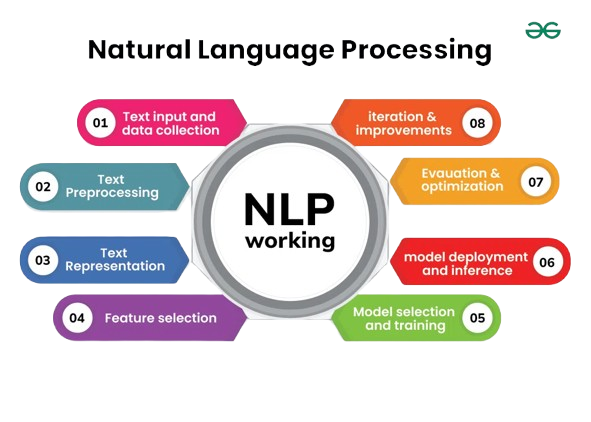
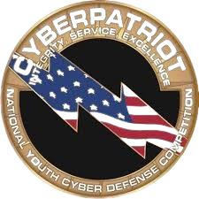

Hi! I’m Kaden, and I’m currently 15 years old. I am a sophomore at Canyon Crest Academy. I do a variety of activities, such as playing basketball, piano, and trombone. I do many, many school extracurricular activities. Some of the most prolific ones are CyberPatriot, math team, and robotics. I am also an AI enthusiast, particularly in NLP. Additionally, I volunteer as a peer tutor, teaching math at Casa De Amistad.
From a young age, I’ve always been interested in computers. I just think they are so cool because although it looks like they don’t do much to normal users, in reality they are extremely complex. The world is slowly shifting into an age of technology, so it is crucial to learn about computers. On the topic of computers, I’ve been doing cybersecurity for over 4 years. Cryptography is my strong suit, but I can do the other subjects as well. I’m currently taking APCSP, and it’s cool to learn about all the different aspects of computer science that I didn’t know before.
My biggest passion surrounds computers, but the activity that surrounds this the most is CyberPatriot. CyberPatriot is a cybersecurity defense corporation organized by the Air Force Association. There are generally 3 subjects: Windows, Linux, and Cisco. Windows and Linux are two different types of operating systems, while Cisco does networking things. I do both Windows and Linux. In general, this competition is very fun, and there are chances to go to nationals in March. I haven’t been there before, so I hope I can go there this year. It would be a very fun experience.